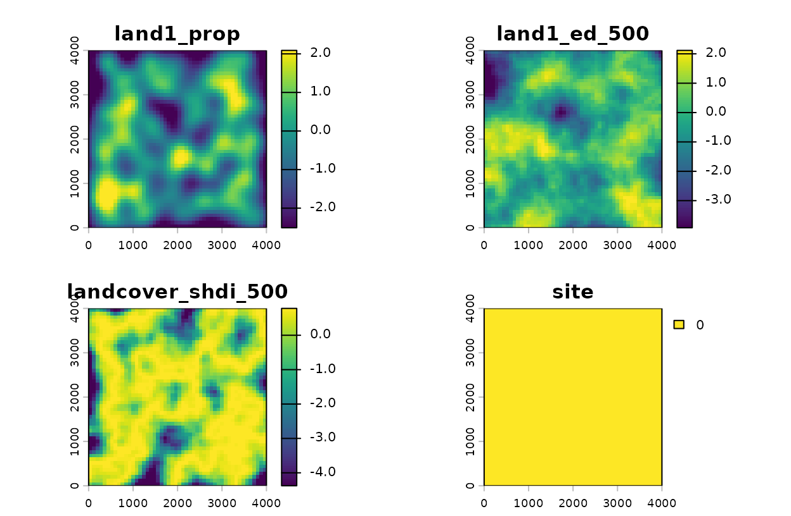

Landscape Metric Covariates
Bill Peterman
Source:vignettes/landscape_metric_covariates.Rmd
landscape_metric_covariates.RmdWhy explicit covariate specifications?
Traditional multiScaleR workflows assume that each
raster layer becomes one optimized, kernel-weighted covariate. That
remains the default behavior. For landscape metrics, however, the
relationship between raster layers and model covariates is no longer
one-to-one.
For example, the same binary forest raster might be used to calculate:
- a distance-weighted proportion of forest cover,
- edge density within a fixed buffer, and
- edge density at an optimized scale.
Those are different covariates, even though they come from the same
source raster. The msr_vars() interface lets you name those
derived covariates explicitly.
Landscape metric reference
landscape_var() supports 25 metrics grouped into five
families. All metrics are computed within a circular buffer centered on
each sample point (or on each raster cell when projecting with
kernel_scale.raster()). Metrics that operate on categorical
rasters expect integer class values; continuous rasters should be
classified before use.
Most metrics describe the whole landscape within the buffer. Three
are class-level: they describe a single category and require a
class argument naming the focal class (covered in Class-level metrics). All of the
categorical metrics reproduce the values returned by the
landscapemetrics package, which itself follows the
FRAGSTATS conventions.
Composition metrics
These metrics describe the diversity and abundance of patch types within the buffer. They require a categorical (integer-valued) raster.
| Code | Name | Description |
|---|---|---|
shdi |
Shannon Diversity Index |
,
where
is the proportion of class
.
Increases with richness and evenness. The base argument
controls the logarithm base (default: natural log). |
shei |
Shannon Evenness Index | SHDI / ln(richness). Ranges from 0 (one dominant class) to 1 (perfectly even). |
sidi |
Simpson Diversity Index | . Probability that two randomly selected cells belong to different classes. Ranges from 0 to 1. |
siei |
Simpson Evenness Index | SIDI / (1 - 1/richness). Standardizes SIDI against maximum possible diversity. Requires at least 2 classes and can be uninformative for optimized scales when local evenness is uniform across sample points. |
msidi |
Modified Simpson Diversity | . Logarithmic transformation of Simpson concentration; unbounded above. |
msiei |
Modified Simpson Evenness | MSIDI / ln(richness). Evenness analogue of MSIDI. Can be uninformative for optimized scales when local evenness is uniform across sample points. |
pr |
Patch Richness | Count of distinct classes present in the buffer. |
prd |
Patch Richness Density | PR per 100 ha of buffer area. |
rpr |
Relative Patch Richness | (PR / classes_max) × 100. Requires the
classes_max argument. |
ta |
Total Area | Total area of the buffer in hectares. |
Edge metrics
These metrics quantify the amount and complexity of boundaries between classes. They require a categorical raster and use cell adjacency information.
| Code | Name | Description |
|---|---|---|
ed |
Edge Density | Total internal edge length (m) per hectare of buffer area. Higher values indicate a more fragmented landscape. |
te |
Total Edge | Total internal edge length in meters. |
lsi |
Landscape Shape Index | Total perimeter / minimum possible perimeter for the same number of cells. LSI = 1 for a perfectly compact (circular) patch; increases with irregularity. |
Adjacency metrics
These metrics describe how often similar or dissimilar classes occur next to one another. They require a categorical raster and use cell-pair counts (the class-by-class co-occurrence matrix).
| Code | Name | Description |
|---|---|---|
ai |
Aggregation Index | Area-weighted aggregation of like adjacencies within classes. Higher values indicate that classes are more aggregated. |
pladj |
Proportion of Like Adjacencies | Percentage of cell-pair boundaries shared between cells of the same class. High values indicate a clumped or aggregated landscape. |
contag |
Contagion | Measures the degree of clumping across all class pairs. Ranges from 0 (maximum interspersion) to 100 (single class). Requires at least 2 classes. |
iji |
Interspersion & Juxtaposition | Evenness of adjacencies among different classes (like
adjacencies are ignored). Ranges from near 0 (one class pair dominates
the between-class boundaries) to 100 (every class is equally adjacent to
every other). Requires at least 3 classes and enough between-class
adjacencies in each buffer; otherwise it returns NA. |
Information theory metrics
These metrics come from treating the class-pair co-occurrence matrix
as a bivariate probability distribution, following Nowosad and Stepinski
(2019). Their value is that they separate composition (how many
classes, how evenly mixed) from configuration (how the classes
are arranged), which the diversity and contagion metrics confound. They
require a categorical raster. The base argument sets the
logarithm base; use base = 2 for bits, matching
landscapemetrics.
| Code | Name | Description |
|---|---|---|
ent |
Marginal entropy, H(x) | Diversity of the cell values entering adjacencies. Increases with the number and evenness of classes; this is the composition signal. |
joinent |
Joint entropy, H(x, y) | Diversity of the class-pair adjacencies themselves: the total complexity of the pattern. |
condent |
Conditional entropy, H(y | x) | Configurational complexity remaining once composition is accounted for: the uncertainty about a neighbor’s class given the focal cell’s class. |
mutinf |
Mutual information, I(y, x) | How much a cell’s class tells you about its neighbor’s. Rises as like classes cluster; this is configuration separated from composition. |
relmutinf |
Relative mutual information |
mutinf / ent, rescaled to 0–1 so configuration can be
compared across landscapes of differing composition. Equal to 1 when
mutinf is 0. Unaffected by base. |
Class-level metrics
The metrics above summarize the whole landscape within the buffer.
These three instead describe a single focal class, supplied through the
class argument of landscape_var() (an integer
matching one of the raster’s class codes). Asking for one of these
metrics without a class, or supplying class to
any other metric, is an error. Where the focal class is absent from a
buffer, pland and ca return 0 and
clumpy returns NA.
| Code | Name | Description |
|---|---|---|
clumpy |
Clumpiness Index | Aggregation of the focal class, corrected for its own abundance. Ranges from -1 (maximally disaggregated) through 0 (random) to 1 (maximally clumped). |
pland |
Percentage of Landscape | The focal class’s share of the valid buffer cells, as a percentage. |
ca |
Class Area | Area of the focal class within the buffer, in hectares. |
## Clumpiness of land-cover class 2, and that class's percentage cover,
## both within a fixed 500 m radius
class_vars <- msr_vars(
cover2_clumpy = landscape_var("landcover", metric = "clumpy", radius = 500, class = 2),
cover2_pland = landscape_var("landcover", metric = "pland", radius = 500, class = 2)
)
class_varsLoad example data
This example uses the simulated count data and survey locations
included with multiScaleR. The data contain 100 spatial
sample points, which is large enough to demonstrate the workflow without
making the vignette expensive to build.
data("landscape_counts")
dat <- landscape_counts
data("surv_pts")
pts <- vect(surv_pts)
land_rast <- rast(pkg_extdata("landscape.tif"))The raster layer land1 is a binary habitat layer. To
demonstrate a categorical landscape-diversity metric, we also create a
simple three-class land-cover layer from the continuous
land2 raster. In a real analysis, this would usually be a
mapped categorical land-cover product.
landcover <- classify(
land_rast$land2,
rcl = matrix(
c(-Inf, -0.5, 1,
-0.5, 0.5, 2,
0.5, Inf, 3),
ncol = 3,
byrow = TRUE
)
)
names(landcover) <- "landcover"
metric_rasters <- c(land_rast$land1, landcover)
plot(metric_rasters)
plot(metric_rasters$land1, main = "land1 with survey points")
points(pts, pch = 19, cex = 0.6, col = "red")Define derived covariates
Use msr_vars() to define model covariates as
transformations of source raster layers. Here, land1_prop
is optimized as a kernel-weighted covariate, while
land1_ed_500 and landcover_shdi_500 are
fixed-radius landscape metrics calculated within 500 m of each
point.
scale_vars <- msr_vars(
land1_prop = kernel_var("land1"),
land1_ed_500 = landscape_var("land1", metric = "ed", radius = 500),
landcover_shdi_500 = landscape_var("landcover", metric = "shdi", radius = 500)
)
scale_varsThis is the key distinction:
-
land1andlandcoverare source raster layers. -
land1_prop,land1_ed_500, andlandcover_shdi_500are model covariates. - Only
land1_propreceives an optimized sigma parameter in this example.
Prepare model data
Pass the covariate specification to kernel_prep(). The
returned kernel_dat data frame contains the derived
covariates, not merely the original raster layer names.
kernel_inputs <- kernel_prep(
pts = pts,
raster_stack = metric_rasters,
max_D = 1200,
kernel = "gaussian",
scale_vars = scale_vars,
verbose = FALSE
)
head(kernel_inputs$kernel_dat)Combine the derived covariates with the response data and fit the starting model.
df <- data.frame(dat, kernel_inputs$kernel_dat)
mod <- glm(
counts ~ site + land1_prop + land1_ed_500 + landcover_shdi_500,
family = poisson(),
data = df
)Optimize the kernel covariate
Because the two landscape metrics were defined with fixed radii, only
land1_prop is optimized. This keeps the example fast while
still showing how kernel-scaled and landscape-metric covariates can be
included in the same model.
opt <- multiScale_optim(
fitted_mod = mod,
kernel_inputs = kernel_inputs,
verbose = FALSE
)
opt <- vignette_cache$landscape$opt
summary(opt)
#>
#> Call:
#> multiScale_optim(fitted_mod = landscape_mod, kernel_inputs = landscape_inputs,
#> verbose = FALSE)
#>
#>
#> Kernel used:
#>
#>
#> ***** Optimized Scale of Effect *****
#>
#> Mean SE 2.5% 97.5%
#> land1_prop 179.1503 39.2233 101.2822 257.0184
#>
#>
#> ====================================
#>
#> ***** Optimized Scale of Effect -- Distance *****
#> Scale distances (map units) at 90%, two definitions.
#>
#> 2D, radius of the circle for the ideal untruncated kernel (selected):
#> Mean 2.5% 97.5%
#> land1_prop 384.45 217.35 551.55
#>
#> 1D, along a line through the point (comparison):
#> Mean 2.5% 97.5%
#> land1_prop 294.68 166.59 422.76
#>
#>
#> ====================================
#>
#> ***** Fitted Model Summary *****
#>
#>
#> Call:
#> glm(formula = counts ~ site + land1_prop + land1_ed_500 + landcover_shdi_500,
#> family = poisson(), data = data)
#>
#> Coefficients:
#> Estimate Std. Error z value Pr(>|z|)
#> (Intercept) 0.58563 0.07789 7.519 5.53e-14 ***
#> site 0.19109 0.07762 2.462 0.013817 *
#> land1_prop -0.33519 0.08770 -3.822 0.000132 ***
#> land1_ed_500 -0.11827 0.07755 -1.525 0.127223
#> landcover_shdi_500 -0.14202 0.06091 -2.332 0.019723 *
#> ---
#> Signif. codes: 0 '***' 0.001 '**' 0.01 '*' 0.05 '.' 0.1 ' ' 1
#>
#> (Dispersion parameter for poisson family taken to be 1)
#>
#> Null deviance: 224.24 on 99 degrees of freedom
#> Residual deviance: 180.00 on 95 degrees of freedom
#> AIC: 386.67
#>
#> Number of Fisher Scoring iterations: 5
#>
#>
#>
#> ***** Follow-up recommendation *****
#> Recommended `max_D`: 1200
#> Recommended starting `sigma` values:
#> land1_prop
#> 179.1503
#>
#> Action:
#> Use the optimized parameters as efficient starting values if refitting.Project derived covariates to rasters
kernel_scale.raster() also understands
scale_vars. When a fitted multiScaleR object
is supplied, optimized covariates use their fitted scale and
fixed-radius landscape metrics use their specified radius.

Projected derived covariates.
The resulting raster names match the model covariates:
names(projected)
#> [1] "land1_prop" "land1_ed_500" "landcover_shdi_500"
#> [4] "site"Producing landscape metric rasters without a fitted model
kernel_scale.raster() can generate landscape metric
raster surfaces directly, without having fitted a model at all. This is
useful when you want to explore how a metric varies across the landscape
at a given scale, compare metrics side-by-side before committing to a
model structure, or simply produce a covariate map from a classified
raster.
Pass a scale_vars object in which all covariates have a
fixed radius (i.e., radius is not
NULL in landscape_var()). No
sigma argument is needed because no scale is being
optimized.
## Define several metrics at a fixed 500 m radius
standalone_vars <- msr_vars(
land1_ai = landscape_var("land1", metric = "ai", radius = 500),
land1_ed = landscape_var("land1", metric = "ed", radius = 500),
land1_lsi = landscape_var("land1", metric = "lsi", radius = 500),
land1_pladj = landscape_var("land1", metric = "pladj", radius = 500),
cover_shdi = landscape_var("landcover", metric = "shdi", radius = 500),
cover_pr = landscape_var("landcover", metric = "pr", radius = 500),
cover_sidi = landscape_var("landcover", metric = "sidi", radius = 500)
)
## Apply directly: no multiScaleR object or sigma values required
metric_surfaces <- kernel_scale.raster(
raster_stack = metric_rasters,
scale_vars = standalone_vars,
verbose = FALSE
)
plot(metric_surfaces)Each output layer is named after the covariate defined in
msr_vars():
names(metric_surfaces)You can also compute a single metric in one line without defining a
msr_vars() object. Simply wrap a single
landscape_var() call:
ed_300 <- kernel_scale.raster(
raster_stack = metric_rasters["land1"],
scale_vars = msr_vars(ed_300m = landscape_var("land1", metric = "ed", radius = 300)),
verbose = FALSE
)
plot(ed_300, main = "Edge density (m/ha) within 300 m")Different radii produce notably different surfaces for the same metric. The example below computes edge density at three scales and plots them together for comparison:
ed_multi <- kernel_scale.raster(
raster_stack = metric_rasters["land1"],
scale_vars = msr_vars(
ed_200m = landscape_var("land1", metric = "ed", radius = 200),
ed_500m = landscape_var("land1", metric = "ed", radius = 500),
ed_900m = landscape_var("land1", metric = "ed", radius = 900)
),
verbose = FALSE
)
plot(ed_multi,
main = c("ED: 200 m", "ED: 500 m", "ED: 900 m"))Separating composition from configuration
The information-theory metrics are most useful when you want to ask
whether an effect is driven by what is in the neighborhood (its
composition) or by how it is arranged (its configuration). The
surfaces below project three metrics for the three-class
landcover layer at a fixed 500 m radius.
info_surfaces <- kernel_scale.raster(
raster_stack = metric_rasters["landcover"],
scale_vars = msr_vars(
H_x = landscape_var("landcover", metric = "ent", radius = 500, base = 2),
MI = landscape_var("landcover", metric = "mutinf", radius = 500, base = 2),
relMI = landscape_var("landcover", metric = "relmutinf", radius = 500)
),
verbose = FALSE
)
plot(info_surfaces, main = c("Marginal entropy (bits)",
"Mutual information (bits)",
"Relative mutual information"))How to read these surfaces: marginal entropy
(ent, here in bits because base = 2) is a
composition measure: it is high where the buffer holds several classes
in roughly equal proportion, and near 0 where one class dominates.
Mutual information (mutinf) is a configuration measure: it
is high where like classes cluster into contiguous patches and low where
the classes are finely interspersed, independent of how many
classes are present. Relative mutual information
(relmutinf) divides the two, putting configuration on a 0
to 1 scale so it is comparable between neighborhoods that differ in
composition. Two buffers can share the same ent yet have
very different mutinf: same ingredients, different spatial
arrangement. That separation is the reason to prefer these metrics over
contagion when arrangement is the hypothesis of interest.
For a single class, clumpy answers the same
configuration question on the -1 to 1 scale familiar from FRAGSTATS,
while pland reports that class’s cover:
class2_surfaces <- kernel_scale.raster(
raster_stack = metric_rasters["landcover"],
scale_vars = msr_vars(
clumpy2 = landscape_var("landcover", metric = "clumpy", radius = 500, class = 2),
pland2 = landscape_var("landcover", metric = "pland", radius = 500, class = 2)
),
verbose = FALSE
)
plot(class2_surfaces, main = c("CLUMPY (class 2)", "PLAND (class 2, %)"))Optimizing landscape metric radii
To optimize the scale of a landscape metric, omit radius
from landscape_var(). For example:
scale_vars_opt <- msr_vars(
land1_prop = kernel_var("land1"),
land1_ed = landscape_var("land1", metric = "ed"),
landcover_shdi = landscape_var("landcover", metric = "shdi")
)This is statistically meaningful, but it is more computationally expensive than optimizing a kernel-weighted mean. At each candidate radius, the landscape metric must be recalculated for every sample point. For moderate or large data sets, consider first testing the workflow with a subset of points or using precomputed results in reproducible documents.
Before optimizing iji, siei, or
msiei, inspect a pilot kernel_prep() result or
compare a few fixed radii. These metrics can be all NA or
nearly constant when buffers contain too few classes, too few
between-class adjacencies, or nearly identical evenness at all sample
points. In that case, use a larger radius, increase max_D,
or choose a more stable diversity, entropy, or edge metric.
Practical guidance
Use fixed-radius landscape metrics when you have a biologically motivated buffer distance or when the metric is expensive to recompute. Use optimized landscape metric radii when the scale itself is a central question and computation time is acceptable.
At present, optimized landscape metrics are not supported with
kernel = "expow" because the exponential-power shape
parameter does not apply cleanly to fixed-buffer landscape metrics.
See also
-
vignette("surface_metric_covariates", package = "multiScaleR")for the continuous-surface analogue of these metrics (roughness, gradient, and texture of a continuous raster). -
vignette("multiScaleR_Guide", package = "multiScaleR")for the core kernel-weighting workflow. - The help page
?msr_varslists every supported metric with its definition.
References
Nowosad, J., & Stepinski, T. F. (2019). Information theory as a consistent framework for quantification and classification of landscape patterns. Landscape Ecology, 34(9), 2091–2101. https://doi.org/10.1007/s10980-019-00830-x